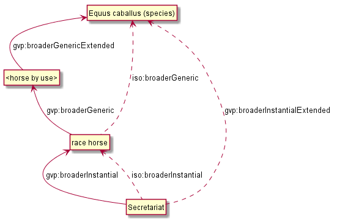
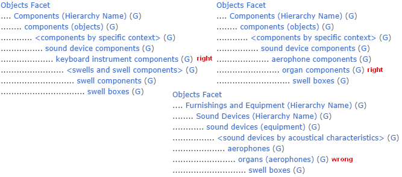

On Compositionality of ISO 25964 Hierarchical Relations (BTG, BTP, BTI)
Vladimir Alexiev, Ontotext Corp
Jutta Lindenthal, Consultant to digiCULT-Verbund eG
Antoine Isaac, Europeana and VU Amsterdam
Networked Knowledge Organization Systems (NKOS 2014) Workshop
DL2014 Conference, London, 12 Sep 2014
2D interactive version, pdf, slideshare.
Press O for overview, H for help.
Proudly made in plain text with reveal.js, org-reveal, org-mode and emacs.
Table of Contents
BTG, BTP, BTI
KOS have used different kinds of hierarchical relations for a long time:
| Relation | Abbr | Name | Example |
| broaderGeneric | BTG | Genus/Species Relation | calcite is a kind of mineral (AAT) |
| broaderPartitive | BTP | Part/Whole Relation | Tuscany is a part of Italy (TGN) |
| broaderInstantial | BTI | Kind/Instance Relation | Rembrandt van Rijn is instance (example) of person (ULAN) |
| SG Dynamo Dresden BTI football clubs (GND) |
BTG, BTP, BTI Examples
Examples:
- Deutsche Nationalbibliothek: Gemeinsame Normdatei Ontology uses eg gndo:broaderTermInstantial (see Dynamo Dresden in Linked Data Service)
- Some vocabs hosted by digiCULT-Verbund eG in xTree at vocnet.org
- Vocabs using the FinnONTO SKOS Extensions
- WordNet has even more BTP distinctions: member vs part vs substance meronym/holonym
- ISO 25964 Ontology officially formalized these (as direct "step" properties)
- Most recently, Getty Vocabulary Program LOD
- First industrial apploication of ISO 25964.
- Many examples in this presentation are from GVP
Definitions in ISO 25964
- BTG: amenable to a logical all-and-some test.
- Children should all be a type, kind, example or manifestation of the parent
- From the parent's point of view, it encompasses only some of any given child
- Comparable to the (fully transitive) subclass (isA) relationship in OWL.
- BTP: part of an entity or system belongs uniquely to a particular possessing whole in any context
- The part may not belong to more than one whole, and BTP has to be universally valid
- The standard explicates 4 main classes of BTP concepts, but the ontology defines only 1 BTP
- AAT Guidelines: "Each child should be a part of the parent and all the other ancestors above it" (implicit transitivity)
- BTI: individual instance to general class
- Instances often represented by proper name (also called "classes of one")
- Instances may not have further instances nor subordinated generic concepts, but may be further subdivided
- If such subdivision needed, introduce customized relationships, such as BTX, BTS (subdivision)
Hierarchical Relation Counts in GVP Vocabs

Hierarchical Relations in GVP Vocabs
- AAT: most are BTG, but there is a variety of BTP:
- (C) BTP (C): calendars of relics BTP cabinets of relics
- (C) BTP (G): anvil components BTP <anvils and anvil accessories>
- (G) BTP (C): <jewelry and accessory components> BTP jewelry
- (G) BTP (G): <grinding and milling equipment components> BTP <grinding and milling equipment>
- (C) BTP (H): building divisions BTP Single Built Works
- TGN: all are BTP
- gvp:placeType: in the current TGN LOD release (2.0) is a purely custom property
- May reconsider and make it subprop of BTI, see TGN Place Type Relation (discussion document)
- ULAN: most are BTI, e.g. a person BTI "Persons facet" (ULAN) or "People" Hierarchy (AAT)
- May consider more specific BTI, eg "Painters" (AAT)
- Some BTP, e.g. corporate body BTP another corporate body
Hierarchy Structure in GVP Vocabs
- GVP Subjects include (C)oncepts, but also non-concepts: (F)acets, (H)ierarchies and (G)uide Terms (not used for indexing, only to structure the hierarchy)
- SKOS and ISO define Standard Hierarchical Relations (skos:broader, iso:broaderGeneric, etc) only between Concepts
- So we define custom GVP Hierarchical Relations (gvp:broader, gvp:broaderGeneric, etc) that connect the hierarchy uniformly
- F,G,H are implemented as iso:ThesaurusArray.
- G and C can be intermixed: F>H>(G|C)

Problem Statement
What are the appropriate combinations (compositions) of BTG, BTP, BTI?
- Matters with respect to appropriate closure for information retrieval
- It's a prerequisite for sensible search expansion
- Has not been systematically analyzed to date
The problem with broaderTransitive
ISO 25964 formalized BTG, BTP, BTI as sub-properties of skos:broader
- skos:broader contributes unconditionally to skos:broaderTransitive
(broaderGeneric|broaderPartitive|broaderInstantial) => broader => broaderTransitive
- Ambiguities in representing thesauri using extended SKOS - examples from real life (NKOS 2012) argues:
broaderTransitive should be established only for BTG and BTP, but not for BTI, nor mixed paths of BTG+BTP - skos:broaderTransitive may include semantically inappropriate statements, eg
Sofia BTP Bulgaria BTI country => Sofia BTI country - Lively discussion at SKOS mailing list from Nov 2013 to April 2014
The Time Has Come!
We have to resolve this issue for GVP LOD representation:
- When GVP Hierarchical Relations span non-concept(s), we have to infer an appropriate Standard Hierarchical Relation
- I think it makes sense to represent TGN place types and ULAN artist roles as BTI.
- But skos:broaderTransitive causes eg: a place inherits all the types of its parent places
- So We want to infer only appropriate compositions.
- Instead of skos:broaderTransitive, we're talking about (see BTG, BTP, BTI Inference):
- BTGE, BTPE, BTIE (gvp:broaderGenericExtended, gvp:broaderPartitiveExtended, gvp:broaderInstantialExtended)
- Their disjunction gvp:broaderExtended
BTG, BTP, BTI Compositionality
- Basic decision table. BT*x means BT*|BT*E
| BTGx | BTPx | BTIx | |
| BTGx | BTGE | BTPE | no |
| BTPx | BTPE | BTPE | no |
| BTIx | BTIE | no | no |
- BTG=>BTGE, BTP=>BTPE, BTI=>BTIE: basic inferences
BTG, BTP, BTI Compositionality (2)
- BTGx/BTGx=>BTGE.
- If X is a kind of Y and Y is a kind of Z then X is a kind of Z.
- Eg: racehorses BTG <horses by use or role> BTG Equus caballus (species) => racehorses BTGE Equus caballus (species)
- BTGx/BTPx=>BTPE.
- If X is a kind of Y, which is part of Z then X is part of Z, since X can play the role of Y.
- Eg: beak irons BTG anvil components BTP <anvils and anvil accessories => beak irons BTPE <anvils and anvil accessories>
- If X is a kind of Y, which is part of Z then X is part of Z, since X can play the role of Y.
- BTGx/BTIx=>n/a.
- A generic concept may not be hierarchically subordinate to an instance.
- The understanding of instance, as assumed in this paper, excludes this composition.
BTG, BTP, BTI Compositionality (3)
- BTPx/BTGx=>BTPE.
- If X is part of Y, which is a kind of Z then X is part of Z, since Z can play the role of Y.
- Eg: anvil components BTP <anvils and anvil accessories> BTG <forging and metal-shaping tools> => anvil components BTPE <forging and metal-shaping tools>
- BTPx/BTPx=>BTPE.
- If X is part of Y and Y is part of Z then X is part of Z.
- Eg: Sofia BTP Bulgaria, Bulgaria BTP Europe, so Sofia BTP Europe.
- But see mereological exceptions/imprecisions below!
- BTPx/BTIx=>no.
- Counter-example: Sofia BTP Bulgaria BTI country. But Sofia is no country, it's a city
BTG, BTP, BTI Compositionality (4)
- BTIx/BTGx=>BTIE.
- If X is an instance of Y which is a kind of Z, then X is an instance of Z
- Eg: Mt Athos BTI orthodox religious center BTG Christian religious center => Mt Athos BTP Christian religious center
- If X is an instance of Y which is a kind of Z, then X is an instance of Z
- BTIx/BTPx=>no
- Counter-example: Statue of Liberty pedestal BTI pedestals BTP statues. That particular pedestal is neither BTI nor BTP statues in general.
- but see "beyond paths" below
- BTIx/BTIx=>n/a.
- An instance as a class of one cannot have instances
- But see BTI Elaborations below
Usage 1: Inferring ISO relations

Inferring ISO relations
Inference Dependencies
 (A bit simplified, see GVP Hierarchical Relations Inference)
(A bit simplified, see GVP Hierarchical Relations Inference)
Usage 2: Query Expansion in Information Retrieval
The main purpose of a proper broader relation is to enable query expansion in information retrieval, eg:
- Sofia BTP Bulgaria BTP Europe => Sofia BTPE Europe
Enables a search for places in Europe to also find Sofia. - Mt Athos BTI orthodox religious centers BTG Christian religious centers BTG religious centers => Mt Athos BTIE religious centers
Enables a search for religious centers to also find Mt Athos
Usage 3: Beyond Chain Inferences
If X is necessary BTP Y and Z BTI X and T BTI Y then Z BTP T

Usage 3: Beyond Chain Inferences
If X is necessary BTP of Y and Z BTG Y then X BTP Z
- "keyboards" necessary BTP "keyboard instruments" & "organs (aerophones)" BTG "keyboard instruments" => "keyboards BTPE organs (aerophones)"
Usage 4: Quality Checking
aat:300252578 "swell boxes" has wrong BTG "organs": BTP is right
- "swell boxes" BTG "organ components" BTP "organs (aerophones)" => "swell boxes" BTPE "organs (aerophones)"
- We can catch this if we declare BTGE & BTPE as owl:disjointProperty. But is this true in all cases?
BTP Imprecisions
- Mixing partial vs full inclusion; and physical vs administrative:
Netherlands Antilles BTP Netherlands BTP Europe ??
The first BTP was true until 1954, but is still in TGN (with historic date qualification).
 Eg sample query: Places Outside Bounding Box (Overseas Possessions)
Eg sample query: Places Outside Bounding Box (Overseas Possessions)
BTP Imprecisions (2)
- Partial vs full inclusion:
Istanbul BTP Turkey BTP Asia
How about Istanbul BTP Europe? It does straddle the Bosphorus strait:
BTP Imprecisions (3)
- Mixing member and substance meronym:
chicken feet BTP chicken BTP chicken soup ?? - Mixing intrinsic and extrinsic BTP; and categories (person vs group):
Mick Jagger's BTP Mick Jagger BTP The Rolling Stones ??
Mereology is a complex topic spanning: philosophy, mathematical logic, theoretical computer science, physics, Sheaf, Topos, or Category Theory, object-oriented programming.
BTI Elaborations
- Metaclasses in OOP and Punning in OWL allow classes of classes, and use them profitably
- ISO: an instance may have parts or further subdivisions. Recommends a custom relation (BTX or BTS = subdivsion)).
Eg "BMW E87" BTS "BMW 1 Series" BTI "Automobiles" - In taxonomy there are concepts which belong to different modeling levels (ranks).
Eg Secretariat (<named animal> in ULAN) BTI racehorses BTG Equus caballus (species) BTI species
BTI in Taxonomic Relations

Do Individuals Belong in a Thesaurus?
- GVP TGN gave up on representing Place Type as BTI for now, because of non-sensical broaderTransitive
- If you exclude BTI then broaderExtended coincides with broaderTransitive:
BTG* | (BTG|BTP)* = (BTG|BTP)* - Some CIDOC CRM SIG members: "Individuals don't belong to a thesaurus. Mixing individuals and generics is logically inconsistent"
- Eg in Getty LOD: London (http://vocab.getty.edu/tgn/7011781) is gvp:AdminPlaceConcept, gvp:Subject, skos:Concept
- There's a separate node (http://vocab.getty.edu/tgn/7011781-place) that's schema:Place, wgs:SpatialThing
- Such Concept vs Place Duality is respected by VIAF, UK BL, FR BnF, SE KB; but not US LoC, DE DNB
Do Individuals Belong in a Thesaurus? (2)
We think the main characteristic of a thesaurus is as a list of fixed values. These could be people, places, etc …
- Eg GND authority list mixes 10M things, from materials & subjects to football clubs, dieties, ghosts
- Eg British Museum LOD: London England (http://collection.britishmuseum.org/id/place/x17731) as ecrm:E53_Place and skos:Concept (but the latter may be removed)
- Eg LoC MARC Relators: Author (http://id.loc.gov/vocabulary/relators/aut.html) is skos:Concept, rdf:Property, owl:ObjectProperty !
Thanks for your time!
- Draft paper (some months old, these ideas are still evolving)
- Research conducted as part of GVP LOD publication, http://vocab.getty.edu
- The financial support of the J. Paul Getty Trust is gratefully acknowledged